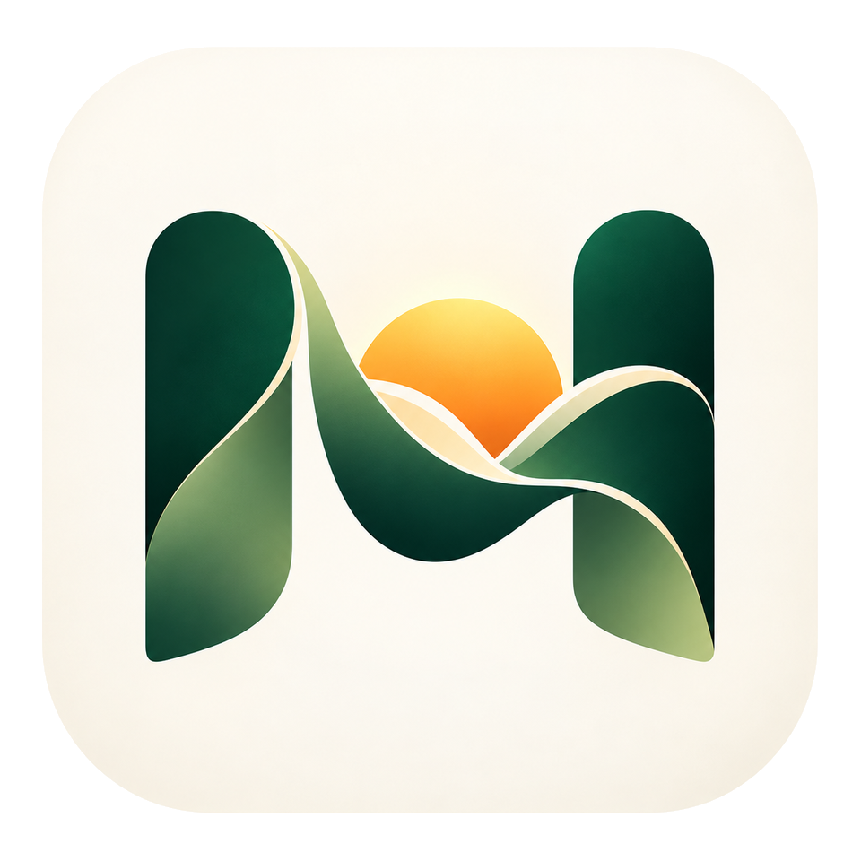

Notice the automatic tap
The question appears when you open an app you chose. It does not hide the app or take the choice away.
INTRODUCING MOMENTWISE
Personal prompts and gentle reminders help you break automatic scrolling habits and choose how you spend your time.
Make room for what matters.
Make your next tap intentional.
A signed download is not available yet.

The question appears when you open an app you chose. It does not hide the app or take the choice away.
Leave returns to the home screen. Staying starts your reminder only if you set one.
Write your own prompt. Set a reminder, including Never. Each app keeps its own rule.
Momentwise does not lock you out. It asks, then gets out of the way.
Each app has its own prompt, buttons, and reminder. Nothing is turned on until you enable it.
The pause asks what you want from this visit. Leave goes home and ends it, so the next open asks again. A trip away under a minute, without Leave, is the same visit. Dismiss for today skips that app until tomorrow. Closing the pause without choosing is not any of those.
A reminder counts time in that app after you choose to stay. Home, another app, a dark screen, and the pause itself do not count. On a phone it can arrive about 15 seconds after the interval, not on the exact second. Never still shows the opening and does not schedule a reminder.
Settings can pause monitoring without deleting rules. Declining a permission leaves Momentwise as a configuration app.
Momentwise explains each grant before the system screen, and only asks when you enable a rule.
Rules stay on the phone. There is no Momentwise account.
Rules, prompts, and reminder settings stay on the phone. Momentwise has no account, and the app does not include an advertising or analytics SDK.
Usage Access is read on the device to notice which app is in front. It is not turned into a usage chart, and it is not uploaded to a Momentwise server. There is no Momentwise server.
Android still shows an ongoing notification while monitoring is running. That is a system requirement for this kind of foreground service, not a sign that the app is sending data off the phone.
No. Leave returns to the home screen. It does not force-stop the other app. If display over other apps is off, you get a notification instead, and the other app is not covered.
Not if you were away for less than a minute and you did not tap Leave. That is the same visit, and the reminder keeps the time you already spent. Leave ends the visit. Coming back after a minute, or after Leave, asks again unless you dismissed that app for today.
Yes. Never still shows the opening pause and does not schedule a reminder. A saved interval counts foreground use of that app, not minutes on the clock while you are elsewhere.
Momentwise is not on Google Play. The download button links to a signed release file only when one is published.
Android requires one while Momentwise is monitoring. It stays silent and says “Momentwise is on.” Hiding it would also stop reliable monitoring. The app does not remove it.